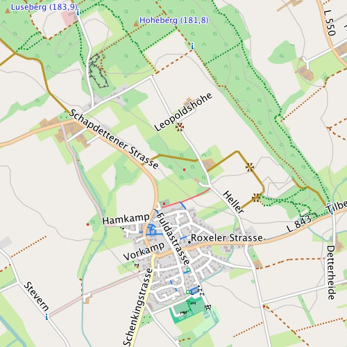
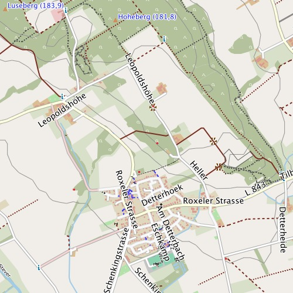
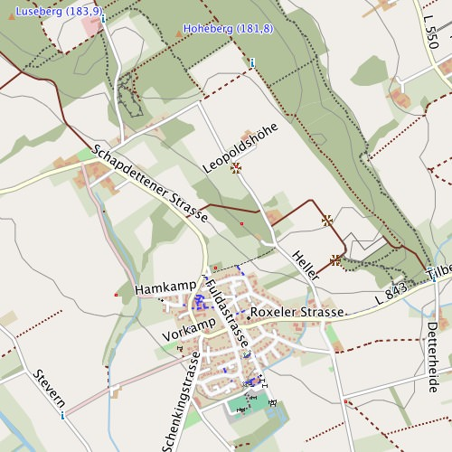
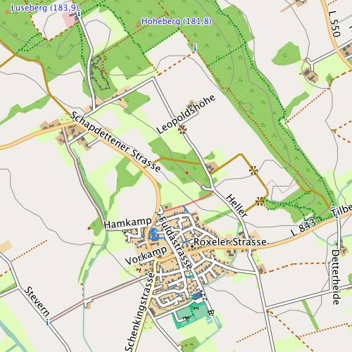
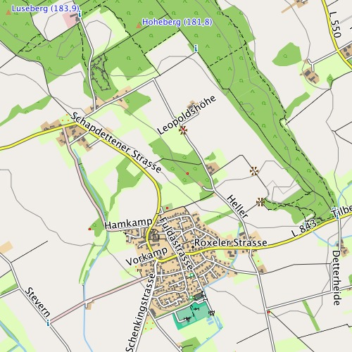

For the Freizeitkarten Project maps, there are various designs (illustrations) that make the map look very differently.
To install alternative map design for BaseCamp:
The following describes how the map design is changed in Garmin BaseCamp. Afterwards the map can be transferred to the GPS device via Garmin MapInstall.
Requirements:
- Program JaVaWa GMTK installed (OS X, Windows)
- BaseCamp closed (if started)
- TYPE files (map design) downloaded
Implementation:
- start JaVaWa GMTK
- select map -> Extras -> Change or add file TYPE -> select TYPE file
- start BaseCamp
- the previously selected map should appear in a new design
To install map with alternative design into GPS receiver:
- start Garmin MapInstall
- select install device (eg. SD card)
- select map
- select tiles
- send tiles to install device
Replace the design right in your GPS device (Windows only):
For users of Windows systems, this is possible via drag & drop now:
1) download "ReplaceTyp.zip" and unzip it
2) connect the GPS device with your Windows computer
3) display the contents of the "ReplaceTyp" folder in an explorer window
4) display the contents of the SD card (GPS device) in another explorer window
5) drag the file "gmapsupp.img" on the icon of the "ReplaceTyp.cmd" file
6) select the design you want ... finish
Use alternative map design in QLandkarte:
In QLandkarte GT the map design can be selected in the corresponding list (drop down menu) below the map.
Design "freizeit"
Characteristics of the map design "freizeit":
- Purpose: Standard design of all Freizeitkarten project maps which is easy to use on PC (Basecamp, QLandkarte) as well as GPS units.
- Features: For many areas "pale" colors with "medium" contrast are used. Streets, roads and important symbols are represented more "significantly". Overall, the design is based on the OpenStreetMap Mapnik-style.
- Languages: German, English
- Extras: Important objects are in "pure" colors. These maps are "easy" to read for people with defective color vision.
- Author: Klaus
Design "outdoor"
Characteristics of the map design "outdoor":
- Purpose: Design optimized for use on handheld GPS devices (tested with Garmin GPSMAP 62s).
- Features: All areas are marked with "pale" colors with "medium" contrast. Streets, roads and important icons are displayed significantly. Overall, the design is based on "Top50" and "ICAO" maps.
- Languages: German, English
- Extras: Important objects are in "pure" colors. These maps are "easy" to read for people with defective color vision.
- Author: Roman
Design "outdoor-light"
Characteristics of the map design "outdoor-light":
- Design derived of "outdoor".
- Features: Improved contrast between land and roads. To highlight tracks and important symbols areas are unicolored. I.e. there are no symbols on the areas included (e.g. mixed forest).
- Author: Roman
Design "contrast"
Characteristics of the map design "contrast":
- Purpose: The main application of this design is the handheld GPS device.
- Features: The colors are "stronger" compare to the design "freizeit". Areas are better to see on touchscreen handheld GPS devices. In addition the contours of roads were reinforced.
- Languages: German
- Author: Stephan
Design "small"
Characteristics of the map design "small":
- Purpose: The design is optimised for the handheld GPS devices preferably with a small display.
- Features: The colors are "stronger" compare to the design "freizeit". Areas are better to see on touchscreen handheld GPS devices. In addition the contours of roads were reinforced.
- Languages: German
- Additional features: Roads and paths are uniformly displayed. I.e. they are not distinguish between "narrow", "medium" and "wide". Roads are shown as a black solid line and paths as a dashed black line. Hiking trails have an alternative color (blue = T1/T2, red = T3/T4, gray = T5/T6/via ferrata).
- Author: Stephan
Have fun with the Freizeitkarten project maps and many interesting tours.